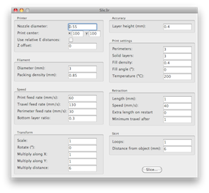

So you've got a 3D printer and a STL file to print. You need to slice (aka "skein"), that is, to convert it to a sequence of GCODE commands that you can send to your printer. You probably tried Skeinforge. Good: Skeinforge does its job well and it's probably the most complete one out there.
So why a new slicer? Slic3r's goals are:
See the README for feature list, roadmap and usage.
Dual-licensed under the Perl Artistic License and the AGPLv3
The easiest way to install Slic3r is to download a precompiled package for MacOS X, Windows or Linux. No dependencies, no hassle.
If you want to stay current and don't wait for updates to the binary packages, you can clone the project with Git and then install all dependencies by running these few commands:
$ git clone git://github.com/alexrj/Slic3r $ cd Slicer $ sudo perl Build.PL $ sudo cpan Wx
Alessandro Ranellucci (aar@cpan.org, aka Sound on FreeNode IRC #reprap)